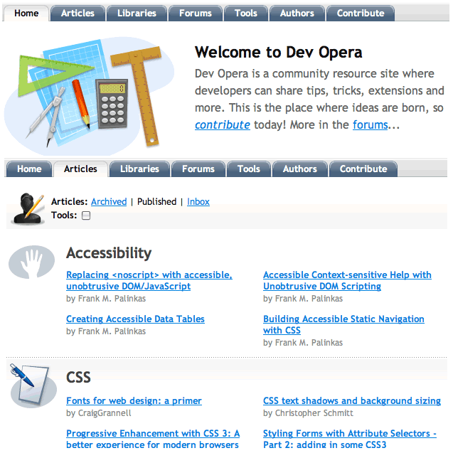

7. Mi kell egy jó weblaphoz?
- Előző leírás — Információs Architektúra — egy website tervezése
- Következő leírás — A színek elmélete
- Tartalomjegyzék
Bevezető
Az előző leírás folytatásaként ebben a cikkben részletesebben megnézzük, hogy milyen tartalom kerüljön a Dung Beatles weboldalára, közben megtudhatod azt is, hogy mi szükséges egy jó website-hoz.
Még most sem fogunk foglalkozni a kódolással, csak megvizsgáljuk a különböző lapokat, és közben megpróbáljuk kitalálni, hogy mi jelenjen meg rajta, figyelembe véve a következetességet, a használhatóságot és a hozzáférhetőséget. Ebben a bejegyzésben a következő témákról lesz szó:
- A kezdőlap
- Navigáció
- M√°s gyakori elemek az oldalakon
- A környezet minden
- Használhatóság
- Hozzáférhetőség
- Összefoglaló
- Tesztkérdések
A kezdőlap
Ezen a ponton sokan biztosan erre gondolnak: „kezdjük azzal a lappal, amellyel a legtöbb felhasználó az elején találkozik, a kezdőlappal. Végül is ez a logikus, nem?”
Bár elég logikusan hangzik, de nem biztos, hogy ezzel a lappal a legjobb kezdeni. Gyakori hiba, hogy a figyelem túlságosan is a kezdőlapra terelődik az elején. Az oldalak kezdőlapja sokszor túl vegyes, mindent megpróbál az oldalról kiemelni, és mindent meg akar mutatni mindenkinek. Ennek az eredménye viszont általában csak egy rakás érdektelen szemét.
Hogy megértsd, mire gondolok, pillants rá az MSN kezdőlapjára (lásd még az 1. ábrán). Elképesztő ez a hatalmas tartalom és hivatkozás dömping. Az MSN websitehálózat óriási: az utazástól a tévéig, a randikeresőtől az útvonaltervekig, az elektromos kütyüktől a környezetvédelemig minden tartalom megpróbálja felhívni magára a figyelmedet.

1. ábra: Az MSN kezdőlapja - linkek garmadájával
Ez a fajta „dobjunk bele mindent a mosogatórongyon kívül, aztán dobjuk bele a rongyot is” hozzáállás akár még jó is lehet egy linkgyűjtemény esetében, de a mi együttesünknél egy ilyen kezdőoldal valószínűleg sokkal több látogatót riasztana el, mint ahányat lenyűgözne.
Egy másik gyakori tévhit, hogy a kezdőlap az az oldal, amelyikkel a látogatóid először találkoznak. Talán ha csak hallanak a bandáról, vagy kapnak valamilyen tollat, matricát, kitűzőt, akármit, amin rajta van a webcímük, akkor előfordulhat, hogy csak egyszerűen beírják a címet a böngészőbe, és a kezdőlapon kötnek ki.
Sokkal valószínűbb azonban, hogy a látogatók egy keresés alapján találják meg az oldalad. Ha a banda nevére keresnek rá, akkor lehetséges (de nem garantálható), hogy az oldal kezdőlapja kerül hozzájuk első találatként. Ha például valaki arra keres majd rá, hogy „Beatles emlékkoncert”, akkor előfordulhat, hogy egyből a „Turné információk” oldalra jut, mivel ez lesz az első találata. Vagy ha arra keresnek rá, hogy „Saskatchewan együttes”, akkor az első találat az oldalról valószínűleg a bandáról szóló oldal lesz, mivel azon megemlítik azt is, hogy hol élnek, míg a kezdőlapon ez nincs rajta.
A New York Times egyik cikkében, amelyben azt elemzik, hogy miért nem kérnek pénzt többé a régi cikkekhez való hozzáférésért, megjegyzik, hogy a látogatók viselkedése megváltozott:
… egyre több olvasó érkezett a keresőkön, vagy más oldalakon közzétett hivatkozásokon keresztül, és egyre kevesebben egyenesen a NYTimes.com kezdőlapjáról. Ezek az indirekt olvasók nem fértek hozzá a cikkek tartalmához a fizetős szint miatt, és a közvetlenül érkezett felhasználókkal szemben ők csak nagyon ritkán fizettek elő a zárt tartalomra. Az ingyenes hozzáféréssel megnőtt a régi cikkek forgalma, és ezáltal emelkedtek a reklámbevételek.
Mit jelent mindez a mi oldalainkra nézve?
Mindez azt jelenti számunkra, hogy bár szükség van arra, hogy a tartalmat több különböző oldalra darabold szét, nem szabad elfelejtened azt sem, hogy a látogatók hogyan érkeznek majd meg hozzád, mi lehet az, amit éppen keresnek, és vajon hová szeretnének továbblépni, ha fel szeretnék fedezni az oldaladat.
Bár eléggé csábító, hogy azért mindennek szorítsunk egy kis helyet a kezdőlapon, valójában sokkal jobb, ha itt csak kiemeljük a többi tartalmat az oldalról, és a forgalmat egyenesen oda irányítjuk. Kezeld úgy a kezdőlapot, mint a többi oldalt a website-on, és adj neki egy határozott célt (például itt megjelenítheted az újdonságokat, adhatsz egy áttekintést az oldalról, bemutathatod a bandát és továbbküldheted a látogatót az aloldalakra, stb.). A lapnak szüksége van még valamilyen navigációra a többi oldal irányába, valamint egy márkajelzésre.
Most egy kicsit mélyebbre ásunk, hogy jobban megismerhessük ezeket a dolgokat…
Navigáció
A webfejlesztés során a navigáció a különböző oldalak között egy fontos, sőt talán az egyik legfontosabb témakör. Meg kell találnod a leggyakoribb célpontokat a weblapodon, és ezeket teheted bele az oldalad fő navigációjába.
Van egy elég gyakori téves elképzelés a website-ok navigációjával kapcsolatban, amelyről már talán te is hallottál, mégpedig az, hogy minden oldal legfeljebb három kattintásnyi távolságra lehet egymástól. Ennek az elméletnek a terjesztése a felelős a legrosszabb és legbonyolultabb navigációkért az interneten. Nézd csak meg példának a népszerűbb online piactér- és árösszehasonlító oldalakat: a legtöbbjük megpróbál annyi linket bezsúfolni a navigációba, amennyit csak tud, mantraként ismételgetve, hogy a felhasználók a lehető legkevesebb kattintással tudjanak valamit vásárolni, máskülönben lelépnek és átpártolnak a konkurenciához. Ez valójában oda vezet, hogy a felhasználót túl sok információ éri, és nem lesz képes ezeket hatékonyan használni. A túl sok választási lehetőség éppen olyan bénító lehet, mint a túl kevés.
Amíg világos lépések vannak egy linktől a másikig, és a felhasználó megkapja a visszajelzést, hogy továbbra is a jó úton jár, addig nem fogja elhagyni az oldalt emiatt.
Az előző cikkben készített IA struktúrát alapul véve a DB website-jának navigációjában a következő lapokra mutató hivatkozások kaphatnak helyet: „Webáruház”, „A Dung Beatlesről”, „Kapcsolat”, „A Zene”, „Banda hírek”, valamint egy link vissza a Kezdőlapra. Az ez alá tartozó lapokra, mint például a „Turné információk” vagy a „Dalszövegek”, már nem szükséges linkelni. Ezeket a linkeket a megfelelő kategóriában bárki megtalálhatja: ha valaki egy dalszövegből azonnal a turné dátumokhoz ugrana, az képes lesz ugyanezt a „Banda hírek” navigációs linken keresztül is elérni a „Turné információk” linkre kattintva.
A legkritikusabb része egy sikeres website navigációnak a konzisztencia. Nézd meg például a navigációs füleket ezen az oldalon (mint például „Home”, „Articles”, „Forums”). Ha körülnézel az aloldalakon, a navigációs sáv végig ott marad, viszont megmutatja neked azt is, hogy éppen melyik részén tartózkodsz a site-nak, és további linkeket ad az adott területen belül. Például az „Articles” (leírások) linkre kattintva a leírások főoldalát nyitod meg, ahol megtalálod a legújabb leírásokat, valamint hivatkozásokat az alkategóriákra, mint például a hozzáférhetőség, a CSS vagy a mobil tartalom (lásd a 2. ábrát).
2. ábra: A dev.opera navigációja a website különböző részein is egyforma.
M√°s gyakori elemek az oldalakon
A navigáción kívül vannak még más olyan elemek is a lapokon, amelyek ismétlődően megjelennek.
Sok oldalnak van logója, céges emblémája vagy valamilyen fejléce, amellyel a tulajdonost jelölik. Például szinte az összes Yahoo! oldalon látni fogsz egy logót a bal felső sarokban, és ez a logó tartalmazza annak a területnek a nevét is a Yahoo! hálózatán belül, amelyikben éppen tartózkodsz (például „Travel”, „Movies”, „Autos”, stb.).
A fejléc (amit a lap teljes felső részén találhatsz) azonban több dolgot is tartalmazhat a logón kívül. Például tartalmazhatja, vagy magához kapcsolhatja a navigációt. Nem ritka a keresőmező sem, amellyel a felhasználók az egész oldalon kereshetnek, elkerülve így a navigációt és a kattintgatást a menükön és hivatkozásokon keresztül. Ezeket az elemeket, vagy legalább egy részüket a website összes lapjára érdemes betenned.
A lábléc (amit a lap alsó részén találsz) további információkat tartalmazhat, mint például a copyright vagy licencmegjegyzések, linkek a website néhány mellékoldalára, ha vannak ilyenek (például „Erről az oldalról”, „Felhasználási feltételek”, „Kapcsolat”, stb.).
A színek, az elrendezés, az ikonok és árnyalatok használata, a tipográfia és a képek kombinációja együttesen azt a benyomást adhatja, hogy ez a lap „része” az egész website-nak: a kulcs itt is a konzisztencia. A konzisztens megjelenés és elrendezés lehetővé teszi, hogy a felhasználó tudja, merre jár, és otthonos hatást kelt. Tudhatod, hogy a lap, amelyen vagy, kapcsolatban áll az egész website-tal, és ugyanazt az élményt nyújtja, mint az előző lap, mivel vizuálisan kapcsolódnak egymáshoz. Amikor a website-ot tervezed, ne feledkezz meg erről, és ne készíts minden lapnak másféle megjelenést.
A mi DB website-unkon a lap fejléce tartalmazni fogja az együttes logóját és nevét, ez megerősíti a látogatókat abban, hogy ugyanazon a website-on járnak, és biztosak lehetnek benne, hogy még mindig az együttes oldalán tartózkodnak. A lábléc copyright információkat fog tartalmazni az oldalról, a dalszövegekről, a képekről és a hanganyagokról, ezen kívül lesz benne egy hivatkozás a kapcsolatokhoz, valamint az együttes megrendeléséhez.
A környezet minden
Minden lap, leszámítva a közös elemeket, egyedi kell legyen. Egy jó website egyik oldala csak egyetlen dolgot, vagy több kisebb dolgot csinál, de azt jól.
Relev√°ns tartalom
A tartalom szétválasztása releváns részekre az egyik legfontosabb dolog, ami egy jó weblapot a legjobbak közé emel. A tartalom egyértelműen címezhető kell legyen (van egy biztos hely, ahol mindig megtalálható, egy egyedi URL-en), és logikusan rendezett (a website-on és az oldalakon belül is), hogy könnyen megtalálható legyen.
A banda közelgő fellépései lehetnek például egy „Fellépések” dobozban is, amelyet minden lapra kitehetsz, de az információnak adhatsz egy saját oldalt is, ahol mindig elérhető lesz. Egy egyszerű „Következő fellépés” modul, amely hivatkozik a Turné dátumok lapra, éppen olyan hatékony, és nem duplázza meg az információkat, valamint nem zavarja össze a látogatókat és a keresőrobotokat.
Fejlécek
Amikor legközelebb a kezedbe kerül egy újság, nézd meg alaposan. Vedd észre, hogy egyes cikkek nagyobbak, vastagabb betűvel vannak írva, képek is vannak benne, vagy feltűnő címeket adtak nekik. Így mutatják meg neked, hogy melyek azok a legfontosabb cikkek, amelyeket érdemes elolvasnod, amikor sietsz, és nem érsz rá mindent végigmazsolázni.
Ugyanez igaz a weboldalakra is. A lap minden részét egy címsor kell bevezessen, amely megmutatja az adott rész relatív fontosságát a lapon belül (ez a rész egy alrésze az előzőnek, vagy ugyanolyan fontosságú?).
Például, ennek a cikknek ebben a részében láthatsz két kiemelt sort: „Releváns tartalom” és „Fejlécek”. Ezek címsorok, és alacsonyabb szinten vannak, mint „A környezet minden” rész, így jelölve, hogy ezek alrészei a környezetről szóló résznek a lapon.
Használhatóság
A használhatóság alatt azt értjük, hogy egy website a józan ész szerint, az elvárt módon működik.
Próbáltál már olyan cikket megnyitni egy hírportálon, amelyikhez először regisztrálnod kell, hogy elolvashasd? Próbáltál már online lefoglalni egy repülőutat vagy rendelni egy vonatjegyet, miközben azt gondoltad, hogy ez is csak maximum két percig tart, mintha csak személyesen vagy telefonon rendelnéd? Írtál már be valaha egy postai címet vagy egy kártyaszámot, hogy aztán később megtudd, hogy más formában kellett volna megadni? Próbáltál már keresni egy oldalon úgy, hogy biztosan tudtad, hogy a keresett szó rajta van az oldalon, de mégsem kaptál találatot?
Ezek mind példák a rossz használhatóságra, amikor nem veszik figyelembe az oldal felhasználóinak igényeit. Ha ezeket az igényeket a design folyamat középpontjába helyezed, akkor nagy valószínűséggel egy megfelelő és kifizetődő weblapot fogsz kapni.
Jól használható weboldalakat viszont nem könnyű készíteni, és a tudás nagy része egyszerűen a tapasztalatból származik. Készíts egy listát azokkal a dolgokkal, amelyek idegesítenek téged más oldalakon, és tanuld meg, hogy hogyan kerülheted el ezeket a sajátodon. Az igazi próba viszont az, ha az oldaladat valódi emberekkel teszteled le. Miután elkészítetted, figyeld meg, hogyan használják az emberek a weboldaladat:
- megtal√°lj√°k azokat a lapokat, amelyeket keresnek?
- kereséskor azokat a találatok kapják, amelyek a keresésnek megfelelnek?
- a képek, hangok, videók rendben működnek a böngészőjükben?
- mérgelődtek valamin a használat közben?
- van olyasmi, ami különösen tetszett nekik?
A dedikált használhatósági teszt egy olyan dolog, amelyért a professzionális cégek nagyon sokat szoktak fizetni, de valójában egy gyors, kötetlen tesztelés is a barátok és családtagok által nagyon sok hasznos információhoz juttathat, és ráterelheti a figyelmedet olyan problémákra, amelyeket korábban nem vettél észre. Ez azért van, mert te készítetted a weblapot, így mindenről tudod, hogyan kellene használni, hogyan kell működnie - viszont mások ezt nem tudják.
Hozzáférhetőség
A hozzáférhetőség alatt gyakran sajnos csak annyit értenek, hogy „olyan weblap, amit el tudnak olvasni a vakok is”. A valóságban a hozzáférhetőség sokkal, sokkal több emberre vonatkozik.
A „kisegítő technológia” kifejezést az olyan kiegészítő számítógépes eszközökre vagy hardverekre használják, amelyek segítik az embereket abban, hogy könnyebben használhassák a számítógépüket. Ezek a legtöbbször a képernyőolvasókat juttatják eszünkbe, amelyet a vakok és gyengénlátók használhatnak, valamint a hangfelismerőt, amelyet a mozgáskorlátozottak, akik nem tudják használni a billentyűzetet és az egeret. De mi van például a szemüvegesekkel? Azok, akiknek látásjavító eszközre van szükségük, ugyancsak kisegítő technológiát használnak. Mégsem neveznék magukat gyengénlátónak.
Egy jó weblap fejlesztésekor nagyon hasznos tudatában lenni azoknak a problémáknak, amelyekkel az emberek az internet használata közben találkozhatnak. Ne feltételezzük azt, hogy a felhasználóknak van egy egerük; ne feltételezzük azt, hogy a felhasználók látják a lap képeit; ne feltételezzük azt, hogy mindenkinek telepítve van a Flash, hanem biztosítsunk egy alternatív tartalmat is, ha ezek mégsem teljesülnek.
De a kisegítő eszközökkel böngésző emberek mellett mások is vannak, akikre a fenti korlátozások vonatkozhatnak, mégpedig a mobiltelefont használók. A Flash például még egy nagyon idegen technológia a mobiltelefonokon, az Apple iPhone nem támogatja, és valószínűleg nem is fogja, mégis ugyanúgy lehet vele böngészni a netet, mint egy Safarival egy Macen (az Opera Mobile támogatja a Flasht). Az Opera Minihez hasonló technológiák alsókategóriás telefonokon működnek, és egy egyszerűbb, de hatékonyabb módon érik el a webet, amelyben viszont a képek egyáltalán nem, vagy csak sokkal kisebb méretben jelennek meg, mint eredetileg. Ez azt jelenti, hogy a képekre betervezett apró részletek elveszhetnek.
A mi együttesünk esetében mindez azt jelenti, hogy ha sok képet jelenítünk meg (fényképek a bandáról), akkor mindig le kell írnunk a kép tartalmát is. Ha egy beépített Flash zenelejátszót használunk a lapon, amellyel az emberek belehallgathatnak az együttes zenéjébe, akkor ki kell tennünk egy alternatív direkt hivatkozást is a zenére, hogy azok is meghallgathassák, akiknek nincs Flash telepítve.
Összefoglaló
Ebben a leírásban azokról a fogalmakról beszéltünk, amelyeket mindenképp észben kell tartanod egy weblap fejlesztése közben, mégpedig hogy az oldalaid legyenek jól használhatóak, mindenki számára hozzáférhetőek és zökkenőmentesen működjenek. Ezek közül mindegyikről fogunk még részletesebben is beszélni a sorozat későbbi részeiben.
Tesztkérdések
Ennek a leírásnak a tesztkérdéseihez egyszerűen csak a webet kell használod: látogasd meg néhány kedvenc weboldaladat, és próbáld meg őket most más szemmel nézni. Készíts jegyzetet az alábbi kérdésekre válaszolva:
- Következetesen használják a fejlécet, a láblécet és a navigációs területeket?
- Figyeld meg, hogyan változik a navigáció, ahogy böngészed az oldalt.
- Figyelj arra, ha valami a lapon idegesít vagy összezavar; ha ilyet találsz, próbálj rá megoldást találni, amellyel elkerülhető lenne a probléma.
- Ha tudod hogyan kell, kapcsold ki a képeket vagy a JavaScriptet a böngésződben, próbáld ki a lapot egy mobiltelefonos böngészőben, majd hasonlítsd össze az élményt azzal, mint mikor a lapot a megszokott körülmények között használod.
- Előző leírás — Információs Architektúra — egy website tervezése
- Következő leírás — A színek elmélete
- Tartalomjegyzék
A szerzőről

Fotó: Andy Budd.
Mark Norman Francis már azelőtt az internettel foglalkozott, hogy a web megszületett volna. Jelenleg a Yahoo!-nál a világ legnagyobb weboldalán dolgozik mint kezelőfelület-tervező, új módszereket és kódolási szabályokat dolgoz ki, valamint nemzetközi támogatást nyújt a minőségi webfejlesztéshez.
A Yahoo! előtt a Formula One Management, a Purple Interactive és a City University vállalatoknál dolgozott különböző minőségben, többek között mint webfejlesztő, CGI programozó és rendszertervező. A http://marknormanfrancis.com/ oldalon blogol.
FejlécekThis article is licensed under a Creative Commons Attribution, Non Commercial - Share Alike 2.5 license.
Comments
The forum archive of this article is still available on My Opera.
No new comments accepted.